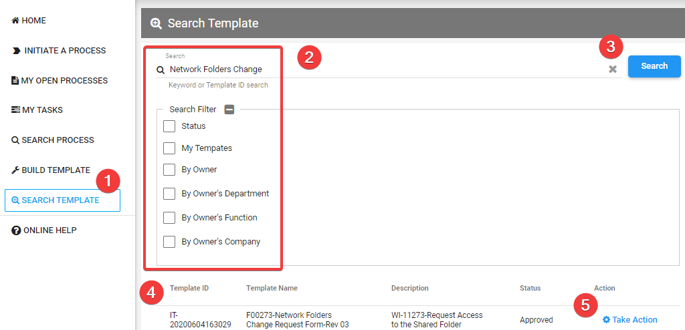

Overview
The search template allows you to track your submitted template approval status, preview and view existing template setting , as well as clone existing template for modification.
Search template

- Click on "SEARCH TEMPLATE" menu.
- Enter search criteria.
- Click on "Search" button.
- Result displayed as per your search criteria.
- You may perform sorting by clicking on the column header.
- Template status :
- Draft = Template pending submission.
- Submit = Template submitted but pending approval by IT or function head.
- Approved = Template approved and released to user.
- Reject = Template rejected by IT or functional head.
- From search results, click on "Take Action" link.
- Click on "Save to Favorite" button to save template as favorite.
- You can easily access the saved template through "Initiate A Process" menu.
- Click on "Template Preview" button to preview template.
- You will be able see how the form is rendered to requestor and who will be routed for action/approval.
- Click on "Create New Process" button to initiate new process for submission.
- Click on "View Template" button to view template setting and configuration.
- You can only view but not allow to save the change of template setting.
- Click on "Clone Template" button to clone template as new template.
- You will be directed to build template page
- All setting will be cloned to the new template except for prefix